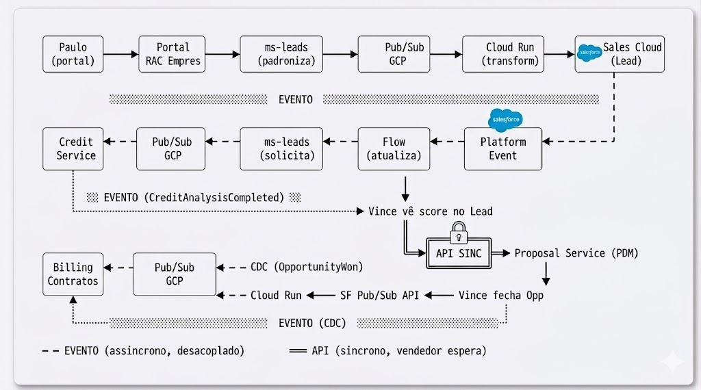

CRM 360 — Arte do Possivel
Arquitetura Event-Driven | Salesforce + Google Cloud
Visao Executiva e Tecnica de Capacidades
Este documento
A Movida possui um ecossistema maduro — Pub/Sub, BigQuery, microsservicos, IA conversacional. O desafio nao e tecnologico. E operacional: unificar a visao do cliente, dar ferramentas ao vendedor, criar rastreabilidade.
Este documento apresenta a arte do possivel: como Salesforce se encaixa nesse ecossistema como camada operacional, sem substituir o que ja existe.
Cada secao responde uma das 7 perguntas da Arquitetura Movida — com exemplos ilustrativos baseados nas jornadas de negocio (RAC, CPA, GTF, SN).
O que e
Mapa de capacidades + benchmark + guia de decisao. Nivel executivo/tecnico.
O que NAO e
Especificacao de campos, schemas ou payloads. Isso sera construido nos workshops.
Regra de Ouro e Principios
Regra de Ouro — Definida pela Arquitetura Movida
"Se o CRM precisa SABER que algo aconteceu → EVENTO"
"Se o CRM precisa PEDIR algo agora → API"
Criterio unico para toda decisao de integracao.
Exemplo Ilustrativo — RAC
Paulo preenche formulario RAC Empresas no portal
O ms-leads padroniza e publica um evento. O CRM precisa saber que esse lead existe — nao precisa pedir nada. Logo: EVENTO.
Dias depois, o vendedor Vince negocia e clica "Gerar Proposta". Ele precisa de uma resposta agora (PDF da proposta). Logo: API.
Regra aplicada: Lead chegou = EVENTO | Proposta gerada = API
Principios complementares
| Principio | Implicacao |
|---|
| Event-Driven by Default | Toda integracao nova comeca como evento. |
| Materializacao local | Dados externos chegam via evento e ficam no CRM. Vendedor ve tudo em 0ms. |
| Operational vs Analytical | BigQuery = analytics. CRM = operacao. Nao se consulta BQ em tempo real. |
| CRM como participante | Salesforce consome/publica no bus. Nao centraliza. |
| IA sem lock-in | IA Movida (cliente) + Agentforce (vendedor) coexistem via eventos. |
Visao de Camadas
Arquitetura em 5 camadas com contratos explicitos entre elas. Cada camada tem ownership, protocolo de comunicacao e padrao de resiliencia proprios.
Camada 1
Canais — Producao de Demanda
external · ingest
WebAppPortaisWhatsApp · MobiGestorGenesys URAIA MovidaOLX
Protocolo de saidaHTTP POST → microsservico responsavel
ContratoPayload bruto, schema livre — cada canal define
Camada 2
Microsservicos Movida — Dominio de Negocio
domain · canonical events
ms-leadsconversation-servicecredit-servicebillingfinesticket
ResponsabilidadeNormaliza, valida regras de dominio, publica evento canonico
Protocolo de saidaPub/Sub publish — JSON com schema registry interno
PadraoCada servico e producer de 1 topico (ownership claro)
ResilienciaRetry local (3x exp backoff) → DLQ no topico
Camada 3
Event Bus — Google Cloud Pub/Sub
messaging · decoupling
FuncaoBarramento corporativo — desacoplamento total entre producers e consumers
Topicos Inbound
lead-createdcart-abandonedconversation-handoffcredit-completedfine-createdticket-*
Topicos Outbound
opportunity-wonlead-qualifiedproposal-generated
GarantiasAt-least-once delivery · ordering by key · retention 7d
ObservabilidadeCloud Monitoring — latencia p95, error rate, DLQ depth
Subscription (push ou pull)
▼
Camada 4
Integration Layer — Cloud Run
bridge bidirecional · GCP ↔ SF
BridgeGCP Pub/Sub ↔ SF Pub/Sub API (gRPC :7443)
Inbound — GCP → SF
①Consumer pull
→Transform (canonical → SF PE schema)
→gRPC publish
Outbound — SF → GCP
①gRPC subscribe (CDC + PE)
→Transform (SF → canonical)
→Pub/Sub publish
AuthOAuth 2.0 via Connected App — client_credentials, token refresh automatico
ResilienciaCircuit breaker · retry com backoff · DLQ (topico-dlq)
ScalingCloud Run autoscale 0–N (baseado em queue depth)
gRPC — SF Pub/Sub API :7443
▼
Camada 5
CRM Operacional — Salesforce Platform
platform · operational core
Vendas
Lead → Opp → Quote → Contract
Pipeline + BU
Atendimento
Queues, SLA, Cadencias
Sales Engagement
Pos-Venda 360
Contrato, Multa, Cobranca
Materializados via evento
AutomacoesFlow Builder (event-driven) · Apex (callouts sincronos)
OutboundCDC (replicacao automatica) + Platform Events (fatos de negocio)
IdentityData Cloud — CPF/CNPJ → perfil unificado cross-BU
AIAgentforce (seller-facing, opera sobre dados materializados)
ComunicacaoMS-COMUNICACAO → Marketing Cloud (Journey Builder)
Camada Paralela
Analitica
async · parallel · feedback
PipelineCDC outbound → Cloud Run → Pub/Sub → BigQuery (lake analitico)
Feedback loopInsights geram eventos que voltam ao bus — ex: churn score
| Camada | Protocolo ↓ | Contrato | Resiliencia | Observabilidade |
|---|
| Canais → MS | HTTP REST | Schema livre (MS normaliza) | Retry no cliente | APM do canal |
| MS → Bus | Pub/Sub publish | JSON canonico (schema registry) | 3x exp backoff → DLQ | Pub/Sub metrics |
| Bus → Bridge | Subscription pull | Envelope padrao (metadata + payload) | Ack deadline + nack | Cloud Monitoring |
| Bridge → SF | gRPC (Pub/Sub API) | Platform Event schema | Circuit breaker + DLQ | Latencia p95 < 2s |
| SF → Bridge | gRPC subscribe (CDC/PE) | ChangeEvent / PE payload | Replay ID (re-delivery) | EventBus metrics SF |
| Bridge → Bus | Pub/Sub publish | JSON canonico outbound | Retry + DLQ | Cloud Monitoring |
Principios de Comunicacao entre Camadas
1. Ownership de topico: Cada microsservico e dono de exatamente 1 topico. Nenhum servico publica no topico de outro.
2. Schema evolution: Campos novos sao aditivos (backward-compatible). Breaking changes exigem novo topico + periodo de transicao.
3. Idempotencia: Todo consumer deve ser idempotente (at-least-once delivery). Dedup por ID_Externo no SF.
4. Falha isolada: Se SF cair, mensagens acumulam no bus (retention 7d). Bridge retoma automaticamente. Zero perda.
Como Mantem
Governanca de eventos
Cada evento precisa de contrato: schema, publisher, consumers, SLA, retry, versionamento.
| Mudanca | Tipo | Impacto |
|---|
| Adicionar campo opcional | Non-breaking | Consumers ignoram |
| Remover campo obrigatorio | Breaking | Novo topic (v2), deprecation |
| Mudar tipo de campo | Breaking | Novo topic (v2) |
| Novo valor em enum | Non-breaking | Consumer tolera |
Sustentacao
| Atividade | Frequencia | Quem |
|---|
| Review erros (Flow + DLQ) | Diario | Admin SF + DevOps |
| Limites API/eventos | Semanal | Admin SF |
| Metricas negocio | Semanal | Gestores BU |
| Event contracts | Sob demanda | Governance Board |
| Capacity planning | Trimestral | Arq. + SF |
Jornadas Ilustrativas
Baseadas nas personas e fluxos apresentados pela Salesforce para a Movida. Ilustram como a arquitetura opera em cenarios reais de cada BU.
P
Paulo
Motorista de aplicativo | Casado, filha bebe | Investidor | Empresa de distribuicao (PJ)
Jornada RAC
Paulo preenche formulario RAC Empresas
- Paulo acessa portal → preenche formulario RAC Empresas
- ms-leads padroniza → publica evento no bus
- Agentforce distribui lead por localidade e disponibilidade
- Vendedor Vince recebe notificacao → acessa Visao 360 & Historico
- Vince aciona integracao para analise de credito (evento) → recebe resultado
- Entra em contato para negociacao → elabora proposta (API sincrona → PDM)
- Envia proposta, recebe assinatura → Venda Concluida
- CDC publica OpportunityWon → billing e contratos consomem
Regra de ouro: Lead/Credito = EVENTO | Proposta = API | Venda fechada = EVENTO (CDC)

Disclaimer: O fluxo abaixo e um exemplo hipotetico para ilustrar o padrao arquitetural. Nao temos profundidade dos processos internos da Movida para afirmar que esta sera a implementacao final — isso sera definido em workshops de detalhamento.
Decomposicao tecnica do fluxo:
- Ingestao (EVENTO): Paulo submete formulario no portal RAC Empresas. O microsservico
ms-leads normaliza o payload (CPF/CNPJ, BU, canal, loja destino) e publica um evento LeadCreated no topico Pub/Sub GCP. Nenhum sistema downstream precisa estar disponivel neste momento.
- Bridge Inbound (EVENTO): Cloud Run consome o evento via subscription, transforma o schema canonico para o formato de Platform Event do Salesforce, e publica via gRPC na Pub/Sub API (:7443). O evento
Lead_Created__e e disparado dentro do Salesforce.
- Processamento CRM (nativo): Um Flow event-driven e acionado pelo Platform Event. Executa: deduplicacao por CPF/CNPJ, criacao do Lead com Record Type da BU, assignment rule (loja/disponibilidade), e notificacao push ao vendedor Vince.
- Enriquecimento de Credito (EVENTO): O Flow (ou trigger) solicita analise de credito publicando evento no bus. O
Credit Service consome, processa, e publica CreditAnalysisCompleted de volta no Pub/Sub. O resultado percorre o caminho inverso (Cloud Run → SF Pub/Sub API → Flow) e materializa o score diretamente no Lead. Vince ve o resultado sem esperar — latencia tipica < 30s.
- Proposta (API SINCRONA): Quando Vince decide gerar proposta, o Salesforce faz callout sincrono (Apex/Flow HTTP) ao Proposal Service (PDM). Aqui e API porque o vendedor espera o PDF na tela — nao faz sentido desacoplar.
- Fechamento e CDC (EVENTO): Vince marca Opportunity como "Fechado Ganho". O CDC (Change Data Capture) gera automaticamente um
OpportunityChangeEvent — zero codigo. Cloud Run subscreve via gRPC, transforma e publica opportunity-won no Pub/Sub GCP. Consumers downstream (Billing, Contratos) reagem de forma independente.
Padrao resultante: 5 dos 6 hops sao evento (assincrono, desacoplado, resiliente). Apenas 1 hop e API sincrona — exatamente onde o usuario humano espera resposta imediata.
Jornada CPA — WhatsApp
Paulo volta pelo WhatsApp querendo assinar um carro
- Paulo chama Movida pelo WhatsApp
- IA Movida conversa, qualifica, recomenda modelo (Pulse)
- IA decide handoff → publica evento com resumo + condutor adicional sugerido
- Vendedora recebe push → acessa Visao 360 → ve que Paulo ja e cliente RAC
- Recomendacao inteligente: estender para 35 meses com condutor adicional
- Negocia → envia proposta → recebe assinatura
- 120 dias antes do vencimento: Marketing Cloud envia notificacao automatica
- Renovacao: nova negociacao com contexto historico completo
Cross-sell: Vendedora ve historico RAC porque Data Cloud unificou Paulo por CPF.

Disclaimer: Fluxo hipotetico para ilustrar o padrao de handoff IA → humano. A implementacao real depende de workshops com os times de IA, CRM e canais da Movida.
Decomposicao tecnica do fluxo:
- Conversacao IA (canal): Paulo inicia conversa pelo WhatsApp via MobiGestor. A
IA Movida (LangGraph/MCPs) conduz a conversa: qualifica intencao, responde FAQ, recomenda modelo (Pulse). Quando identifica necessidade de handoff humano, encerra a interacao autonoma.
- Handoff (EVENTO): O
conversation-service empacota contexto rico (resumo, intencao, sentimento, historico completo) e publica evento ConversationHandoff no Pub/Sub GCP. A IA nao precisa saber quem vai receber — desacoplamento total.
- Bridge Inbound (EVENTO): Cloud Run consome, transforma para schema de Platform Event SF, e publica via gRPC. O evento dispara dentro do Salesforce como
Conversation_Handoff__e.
- Processamento CRM (nativo): Flow event-driven executa: busca Lead por CPF (find/create), enriquece com resumo IA e historico, e dispara notificacao push a vendedora. Data Cloud resolve identidade — revela que Paulo ja e cliente RAC.
- Proposta (API SINCRONA): Vendedora negocia (Pulse 35 meses + condutor adicional) e aciona Proposal Service via callout sincrono. Proposta enviada, assinatura recebida.
- Renovacao (EVENTO agendado): Scheduled Flow monitora contratos CPA com vencimento em 120 dias. Ao disparar, aciona Marketing Cloud (Journey Builder) para envio automatico de comunicacao de renovacao — sem intervencao humana.
Padrao resultante: Todo o fluxo de handoff e assincrono (evento). A IA nao conhece o CRM, o CRM nao conhece a IA — o bus os conecta. API sincrona aparece apenas na geracao de proposta.
Jornada GTF
Paulo (via PJ) precisa de frota para empresa de distribuicao
- Paulo preenche formulario GTF com CNPJ da empresa
- Agentforce realiza triagem → distribui para SDR GTF
- Integracao Neoway valida CNPJ → enriquece dados → publica evento
- SDR Mariana acessa Visao 360 → ve que Paulo ja e cliente CPA (cross-sell!)
- Recomendacao inteligente: condicoes especiais por ser cliente existente
- PDM gera proposta (API sincrona) → envia ao cliente
- Recebe assinatura → venda concluida → PDM atualizado (evento)
Diferencial: Cross-sell so e possivel porque visao 360 unifica PF (CPF) com PJ (CNPJ) via Data Cloud.

Disclaimer: Fluxo hipotetico para ilustrar o padrao de integracao B2B (PJ). A implementacao final depende de workshops com os times de GTF, integracao Neoway e PDM.
Decomposicao tecnica do fluxo:
- Ingestao (EVENTO): Paulo preenche formulario GTF com CNPJ da empresa de distribuicao.
ms-leads normaliza (CNPJ, BU=GTF, porte, segmento) e publica LeadCreated no Pub/Sub GCP. Cloud Run transforma e entrega ao Salesforce via gRPC.
- Triagem e Assignment (CRM nativo): Agentforce realiza triagem automatica do lead GTF e distribui para SDR Mariana via assignment rule por segmento/regiao.
- Enriquecimento CNPJ (EVENTO): Integracao Neoway valida CNPJ, consulta dados (faturamento, porte, quadro societario) e publica evento
CNPJValidated no bus. Cloud Run entrega ao SF — dados materializados no Lead. Mariana ve informacao enriquecida sem callout sincrono.
- Visao 360 + Cross-sell (Data Cloud): Data Cloud resolve identidade: Paulo (CPF) como pessoa fisica ja e cliente CPA. Mariana ve oportunidade de cross-sell e oferece condicoes especiais por ser cliente existente.
- Proposta PDM (API SINCRONA): Mariana aciona geracao de proposta via callout sincrono ao PDM. API porque a SDR espera o documento na tela para envio imediato ao cliente.
- Fechamento e CDC (EVENTO): Assinatura recebida → Opportunity fechada. CDC gera
OpportunityChangeEvent automaticamente. Cloud Run subscreve, transforma e publica opportunity-won. Billing e Contratos reagem de forma independente.
Padrao resultante: Lead, enriquecimento CNPJ e fechamento sao evento. Unico ponto sincrono e a geracao de proposta no PDM. Cross-sell so e possivel porque Data Cloud unifica PF (CPF) e PJ (CNPJ) no mesmo perfil.
Jornada Seminovos
Paulo quer comprar um carro
- Paulo preenche formulario de interesse em automovel (modelo, ano, budget)
- Agentforce triagem → distribui lead para vendedora SN
- Integracao Vetor busca opcoes em estoque (API sincrona)
- Vendedora acessa Visao 360 + recomendacao inteligente com opcoes de veiculos
- Envia mensagem WhatsApp ao cliente com opcoes
- Realiza agendamento de visita a loja (Flow cria Token/Tarefa)
- Marketing Cloud: Confirmacao de agendamento (Email + WhatsApp)
- Visita presencial → test drive → elaboracao proposta → venda concluida
Regra: Busca estoque = API (vendedora espera) | Lead/Agendamento = EVENTO | Confirmacao = Marketing Cloud

Disclaimer: Fluxo hipotetico para ilustrar o padrao de venda consultiva com componente presencial. A implementacao real depende de workshops com os times de Seminovos, integracao Vetor e operacao de loja.
Decomposicao tecnica do fluxo:
- Ingestao (EVENTO): Paulo preenche formulario de interesse em veiculo (modelo, ano, budget).
ms-leads normaliza e publica LeadCreated no Pub/Sub GCP. Cloud Run transforma e entrega ao Salesforce via gRPC — Lead criado com Record Type SN.
- Triagem e Assignment (CRM nativo): Agentforce realiza triagem e distribui para vendedora SN. Data Cloud revela que Paulo ja e cliente RAC + CPA — recomendacao inteligente de veiculos baseada em perfil.
- Busca de Estoque (API SINCRONA): Vendedora aciona integracao Vetor para buscar veiculos disponiveis em estoque. API sincrona porque a vendedora espera resultado na tela para montar opcoes ao cliente.
- Engajamento WhatsApp (canal): Vendedora envia opcoes de veiculos ao Paulo via WhatsApp (MobiGestor). Interacao consultiva ate cliente demonstrar interesse em visita presencial.
- Agendamento (EVENTO): Paulo agenda visita a loja. Flow cria Token + Tarefa de agendamento e dispara evento para Marketing Cloud. Confirmacao enviada por Email + WhatsApp automaticamente.
- Visita + Proposta (API SINCRONA): Apos test drive, vendedora gera proposta via callout sincrono. Proposta enviada, assinatura recebida.
- Fechamento e CDC (EVENTO): Opportunity fechada → CDC gera
OpportunityChangeEvent. Cloud Run subscreve via SF Pub/Sub API, transforma e publica opportunity-won. Billing e Contratos consomem independentemente.
Padrao resultante: Jornada com 2 pontos sincronos (estoque Vetor + proposta) — justificados porque a vendedora precisa de resposta imediata em ambos. Todo o resto (lead, agendamento, confirmacao, CDC) e evento assincrono.
Decisoes Arquiteturais (ADRs)
O porque das decisoes — principios que guiam toda a construcao.
ADR-001: Bridge via Pub/Sub API (gRPC) + Cloud Run
Decisao: Cloud Run como ponte bidirecional GCP ↔ SF via Pub/Sub API nativa (gRPC :7443).
Descartados: MuleSoft (custo redundante) | Event Relay (so AWS) | REST (unidirecional)
Trade-off: ~3-4 sem dev, mas usa stack Movida existente.
ADR-002: CDC (replicacao) vs Platform Events (integracao)
CDC: "O que mudou" → BigQuery, analytics. Automatico, zero codigo.
PE: "Fato de negocio" → acionar sistema externo. Payload controlado.
ADR-003: Materializacao Local (nao API on-demand)
Dados externos chegam via evento e ficam no CRM. Vendedor nunca espera API para ver contexto.
Trade-off: Eventual consistency (30-60s) + storage. Mas 0ms na tela e resiliencia.
ADR-004: Identity por CPF/CNPJ via Data Cloud
Chaves universais. Paulo = mesmo cliente em RAC, CPA, GTF e SN.
Premissa: CPF precisa estar nos eventos. Sem ele, unificacao falha.
ADR-005: Salesforce como Participante, nao Hub
CRM consome/publica no bus. Nao centraliza. Se trocar CRM, eventos continuam.
ADR-006: IA Movida (cliente) + Agentforce (vendedor)
Coexistencia via evento. IA Movida = front conversacional. Agentforce = assistente interno.
ADR-007: Data Cloud — BigQuery (carga) + Eventos (ongoing)
Zero-copy connector para historico. Depois: streaming via eventos em tempo real.
EA Account Analysis
Disclaimer: Esta analise de Enterprise Architecture esta limitada aos materiais compartilhados ate o momento (documentos de arquitetura, transcricoes de reunioes e jornadas apresentadas). Nao substitui discovery formal com acesso ao ambiente, entrevistas estruturadas com stakeholders ou analise de telemetria. Gaps de informacao estao sinalizados com [needs validation].
Executive Summary
A Movida opera um ecossistema de backend maduro (Google Cloud Pub/Sub, BigQuery, microsservicos especializados, IA conversacional LangGraph/MCPs), mas carece de uma camada operacional unificada para o vendedor — resultando em fragmentacao de visao do cliente entre 4 BUs, impossibilidade de cross-sell e dependencia de consulta manual a multiplos sistemas. A recomendacao e posicionar Salesforce Sales Cloud como camada operacional (nao hub), integrada ao ecossistema existente via Pub/Sub API nativa (gRPC :7443), preservando 100% do investimento GCP.
1. Strategic Drivers
| Driver | Impacto na Arquitetura | Urgencia |
|---|
| Fragmentacao cliente cross-BU | Exige identity resolution (CPF/CNPJ) e unificacao de perfil em camada operacional | High |
| Cross-sell inexistente entre BUs | Demanda materializacao de contexto via eventos + Data Cloud | High |
| Lead se perde entre canais | Ponto unico de operacao com SLA, filas e cadencias | High |
| Handoff IA → humano sem destino | Contrato de evento de handoff + CRM que receba contexto rico | Medium |
| Regulatorio (LGPD) | MS-COMUNICACAO + Marketing Cloud como camada de governanca | Medium |
| Escala moderada, complexidade de BU | Automacao low-code por BU (Record Types, Assignment, Cadences) | Medium |
2. Technology Landscape
Core Systems
| Sistema | Papel | Tecnologia | Integracao | Confianca |
|---|
| Google Cloud Pub/Sub | Event Bus corporativo | Managed | Todos os MS publicam/consomem | High |
| BigQuery | Data Lake analitico | Managed | Consumer CDC/eventos | High |
| ms-leads | Normalizacao de leads | Cloud Run | Canais → Pub/Sub | High |
| conversation-service | Conversas e handoff IA | Microsservico | IA → Pub/Sub | High |
| Credit / Billing / Fines / Ticket | Dominios operacionais | Microsservicos | Pub/Sub (evento por dominio) | High |
| IA Movida | Conversacao, triagem | LangGraph + MCPs | MobiGestor → conversation-svc | High |
| PDM (Proposal) | Geracao de propostas | Sistema interno | API sincrona (excecao) | High |
| Neoway | Enriquecimento PJ (CNPJ) | Terceiro | Pub/Sub (CNPJValidated) | High |
| Vetor | Estoque veiculos (SN) | Sistema interno | API sincrona (excecao) | Inferred |
| Genesys | URA, Bot, Suporte | CCaaS | Fora de escopo CRM 360 | High |
Integration Architecture
Padrao dominante: Event-Driven (Pub/Sub). 1 servico = 1 topico. At-least-once. DLQ + retry 3x exp backoff. Retention 7d.
Excecoes sincronas (controladas): PDM (proposta) e Vetor (estoque) — vendedor espera resposta na tela.
Bridge proposta: Cloud Run bidirecional via SF Pub/Sub API (gRPC :7443). Descartados: MuleSoft (custo redundante), Event Relay (so AWS), REST batch (unidirecional).
Data Architecture — Gaps Identificados
| Aspecto | Estado Atual | Proposta |
|---|
| Source of truth | Cada MS dono do seu dominio | Mantem (nao centralizar) |
| Identity resolution | GAP — nao existe cross-BU | Data Cloud (CPF/CNPJ) |
| Perfil 360 | GAP — vendedor consulta N sistemas | Materializacao via eventos no CRM |
| Lake analitico | BigQuery (operacional) | CDC outbound alimenta BQ |
3. Architectural Gap Analysis
Gap: Camada Operacional Unificada
Sintoma: Vendedor consulta 3-5 sistemas para montar contexto. Tempo perdido, experiencia fragmentada.
Causa raiz: Nao existe consumer que materialize dados relevantes em tela unica.
Impacto: Tempo de primeiro contato elevado, leads perdidos, cross-sell impossivel.
Complexidade: Medium — infraestrutura de eventos ja existe; falta o CRM como consumer.
Gap: Identity Resolution Cross-BU
Sintoma: Paulo aparece como 3 registros diferentes (CPF no RAC, CPF no CPA, CNPJ no GTF).
Causa raiz: Sem camada de identity resolution unificando PF e PJ.
Impacto: Cross-sell = zero. Condicoes especiais nao aplicadas. LTV subestimado.
Complexidade: Medium — Data Cloud resolve com match rules CPF/CNPJ nativos.
Gap: Handoff IA → Humano sem Destino
Sintoma: IA conversa e faz handoff, mas contexto se perde. Vendedor pede ao cliente para repetir.
Causa raiz: Evento de handoff existe, mas nao ha consumer que processe (lead + enrich + notify).
Impacto: Experiencia degradada. Valor da IA conversacional subaproveitado.
Complexidade: Low-Medium — evento ja existe, falta Flow no CRM.
Gap: SLA e Cadencias sem Enforcement
Sintoma: Sem medicao de tempo de primeiro contato, sem escalacao, sem cadencia padronizada.
Causa raiz: Sem CRM operacional, nao ha onde implementar SLA tracking.
Impacto: Taxa de contato abaixo do potencial. Gestores sem visibilidade.
Complexidade: Low — configuracao nativa (Queues, Assignment, Cadences, Reports).
4. Opportunity Map
| Oportunidade | Valor | Salesforce | Esforco | Confianca |
|---|
| Visao 360 cross-BU | Revenue (cross-sell) | Sales Cloud + Data Cloud | M | High |
| SLA enforcement + cadencias | Revenue (conversao) | Sales Cloud nativo | S | High |
| Handoff IA → CRM com contexto | Cost (retrabalho) + CX | Flow + Platform Events | S | High |
| Identity resolution CPF/CNPJ | Revenue (LTV) | Data Cloud | M | High |
| Renovacao automatica CPA/GTF | Revenue (retencao) | Marketing Cloud | M | Medium |
| Assistencia ao vendedor (NBA) | Agility (produtividade) | Agentforce | M | Medium |
| CDC → BigQuery (analytics) | Agility (insights) | CDC nativo + Cloud Run | S | High |
Well-Architected Lens
| Pilar | Assessment |
|---|
| Trusted | OAuth 2.0 (Connected App). Field-level security para CPF/CNPJ. LGPD via MS-COMUNICACAO. Event-driven + DLQ = zero perda em falha. |
| Easy | ~70% nativo (config, nao codigo). Vendedor opera em tela unica. Admin SF gerencia Flows sem dev. |
| Adaptable | Event-driven = novo consumer sem alterar producers. Record Types para novas BUs. Cloud Run stateless (0→N). |
5. Risk Register
| Risco | Categoria | Prob. | Impacto | Mitigacao |
|---|
| Volumetria real diverge da estimada | Scale | Med | Med | Workshop volumetria com dados reais |
| Latencia bridge > SLA (<2s p95) | Operational | Low | High | Cloud Monitoring + autoscaling |
| Schema breaking change sem coordenacao | Operational | Med | High | Governance board + novo topico para breaking |
| Adocao baixa pelo vendedor | Operational | Med | High | Change management + UX com menos cliques |
| CPF/CNPJ com qualidade ruim na entrada | Compliance | Med | High | Validacao no ms-leads + match rules tolerantes |
| DLQ acumulando sem tratamento | Operational | Med | Med | Review diario + alertas + runbook |
| Token Connected App expira | Security | Low | High | Auto-refresh (client_credentials) + monitoring |
6. Conversation Strategy
Opening Frame
"Analisando a arquitetura que voces construiram — Pub/Sub como bus, microsservicos por dominio, IA conversacional — temos uma fundacao tecnica madura. A pergunta que queremos explorar juntos e: como dar ao vendedor a mesma maturidade que o backend ja tem, sem duplicar governanca ou criar acoplamento?"
Key Questions
- "Qual e o tempo medio entre lead chegar e primeiro contato? Voces medem?" — Valida gap de SLA.
- "Quando a IA faz handoff, o que acontece com o contexto? Vendedor recebe ou comeca do zero?" — Valida gap de handoff.
- "Ja tentaram cross-sell entre BUs? O que impediu?" — Valida gap de identity resolution.
- "O ms-leads publica em formato canonico ou cada canal tem schema proprio?" — Valida maturidade para integracao.
- "Qual o appetite para operar CRM com time proprio vs depender de parceiro?" — Define modelo operacional.
Landmines
- Nao questionar escolha de Pub/Sub (decisao consolidada)
- Nao sugerir SF como hub/substituto do bus ou lake
- Nao mencionar MuleSoft proativamente (ja descartado)
- Nao prometer fields/schemas (nivel arte do possivel)
- Cuidado com parceiro LEOO — alinhar como complementar, nao concorrente
7. Research Opportunities
Gaps de informacao que fortaleceriam esta analise em workshops subsequentes:
| O que pesquisar | Fonte | Valor |
|---|
| Volumetria real por BU (CPA, GTF, SN) | Dados internos Movida | Sizing de licenciamento |
| Schema do evento LeadCreated | Time de engenharia | Define transform layer da bridge |
| Payload do ConversationHandoff | Time IA / conversation-svc | Campos a materializar no Lead |
| API spec do PDM (REST? gRPC?) | Time PDM | Define callout (Apex vs Flow HTTP) |
| Hierarquia de lojas | Operacao Movida | Territory Management vs custom |
| CRM atual (se existe) | Leandro/stakeholders | Migracao vs greenfield |
| MS-COMUNICACAO: canais e templates | Time comunicacao | Fronteira MC vs MS-COMUNICACAO |
| Roadmap IA Movida (6-12 meses) | Time produto/IA | Antecipar eventos + Agentforce |